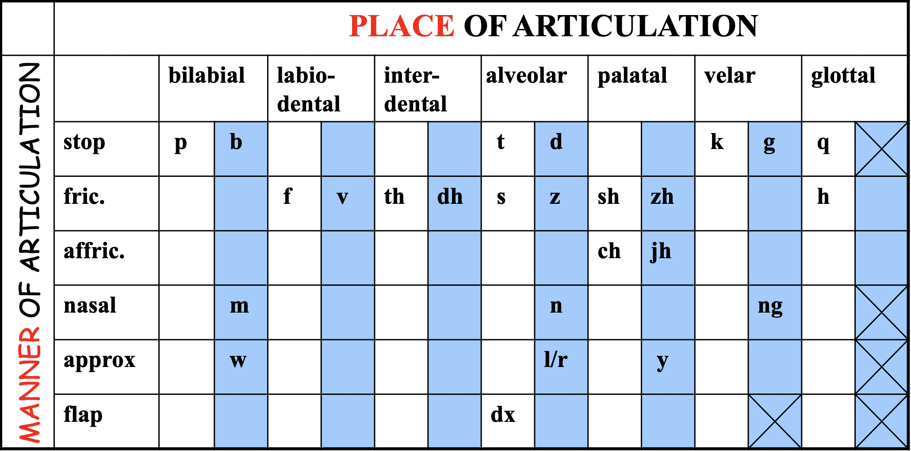

CS224s: Spoken Language Processing
Last modified on May 19, 2022
Phonetics
How do we form sounds?

Things depend on the positioning of the (tip/back) of tongue, lips
ARPAbet

Sound waves are Longitudinal waves
Vocal tract is basically air moving through a tube, with a certain size/length of the tube.
Chatbots vs. Dialog systems
The goal of chatbots is to produce natural, human-like conversations.
The goal of dialog systems is to accomplish a particular task. Naturalness / human-like chat is a “nice to have,” but not essential
Text-to-speech (TTS)
Tacotron
classic encoder decoder model w/ attention
FastSpeech
classic seq2seq transformer – end-to-end
Vocoders (spectrograms => speech)
GlowTTS
Combines a lot of the good things: flexiblity of Tacotron, speed of FastSpeech
VITS
Generative spoken language modeling
wav2vec2 + GPT-style transformer = you can have conversations entirely in the audio space! audio-to-audio models (rather than using ASR)